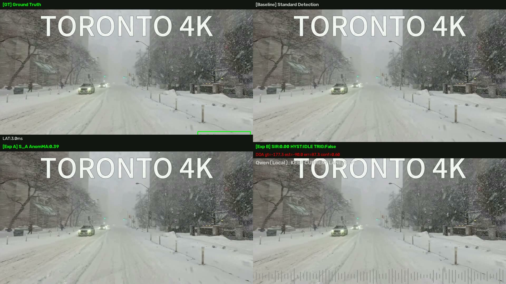
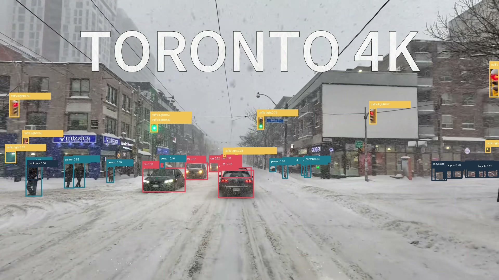
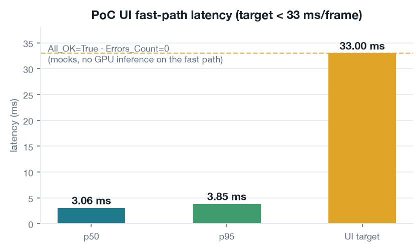
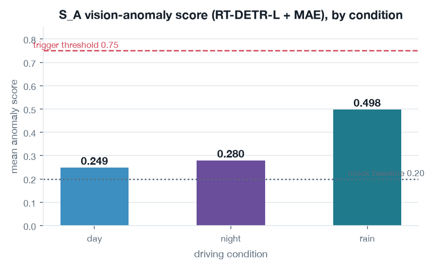
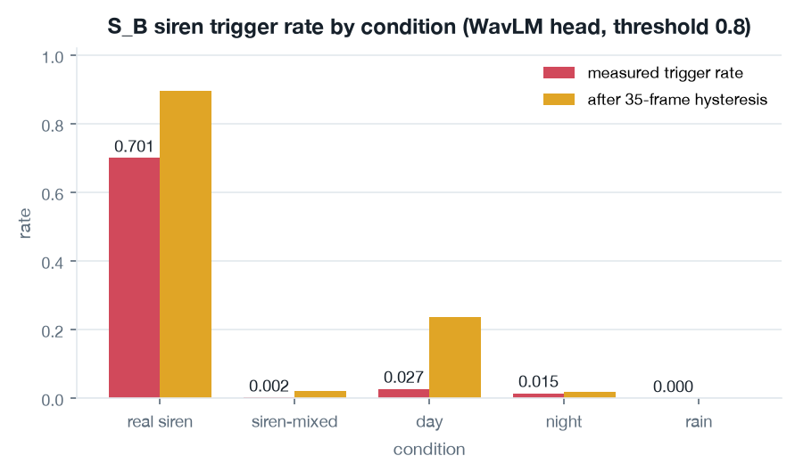
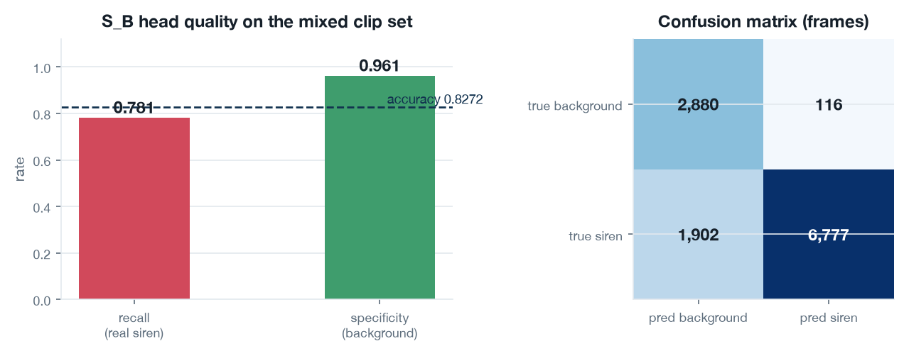
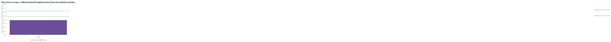
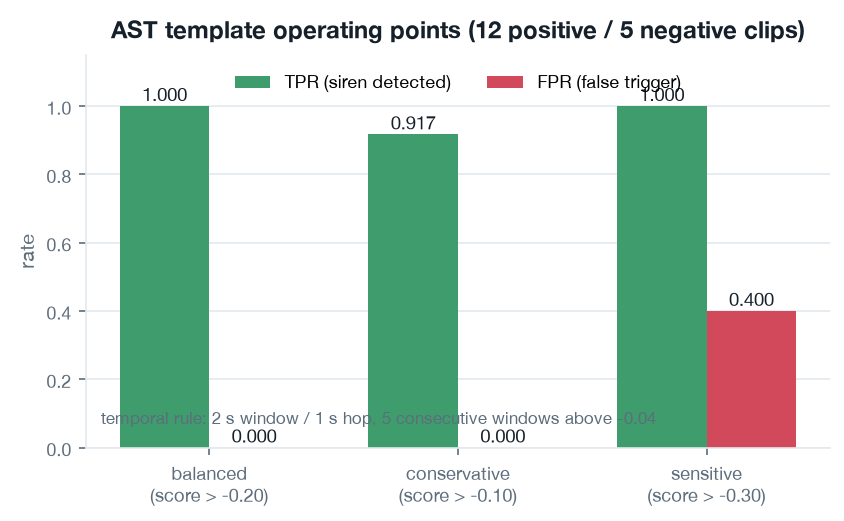

00 · In actionThe 2×2 operator view

A contract-first LangGraph DAG that turns siren detection, DOA tracking and visual anomaly into one VLM-ready context frame for a driving operator.
Contribution — a schema-validated multi-agent pipeline (SI → [SA ‖ ST ‖ SV] → SB → SC) with a live 2×2 operator UI, measured on real dashcam and real siren recordings — and the honest limits that come with it.
Repo spatial-avla-pipeline · report docs/AVLA_PoC_Final_Report.pdf
All numbers are project measurements (outputs/*.json, abl_report_s_*.json, p_siren_report.json).
Figures rendered from project artifacts; no project file was modified.

A siren is audible (direction of arrival), visible (surrounding traffic, weather) and must become language an operator can act on.
Single-modality detectors fail where it matters: rain masks the siren; a wet tunnel wall looks anomalous.

SA vision anomaly · ST siren head · SV verification fixture · SB fusion + 35-frame hysteresis · SC VLM payload.
Every stage exchanges one FrameAudioPacket validated against a Draft-7 JSON Schema — pre and final. A violation is an error, not a warning.
Result: All_OK = True, Errors_Count = 0 across the PoC run.

Frame-exact audio–video sync verified on 4 clips (T09, C01, C02, C04), 450 frames each at 16 kHz / 30 fps — expected sample count matched exactly.
PASS 4/4 clips, 1 800 frames

Rain roughly doubles the day score (0.249 → 0.498): the detector reacts to a wet tunnel wall.
RT-DETR-L inference costs 242–301 ms/frame on this machine, so S_A runs off the 33 ms UI path; the fast path keeps the contract and hysteresis logic.
The live monitor is therefore throttled to 0.5–1.25 FPS, matching the measured checkpoint speed.

Real sirens trigger on 0.70 of frames, ordinary day traffic on 0.027.

fn 1 902 vs fp 116 — misses dominate because the negative clips are long; hysteresis turns isolated positives into a held event.

Real sirens sit farther from the synthetic centroid than siren-mixed dashcam audio — the synthetic baseline was not representative.
Re-training the head on the real G44 sirens gives 100% test accuracy with >99.8% confidence on C01, after restoring the best epoch (13 of 30, early-stop patience 3, loss 0.6895 → 0.0016).

2 s window / 1 s hop, 5 consecutive above −0.04. T09 crossed the single-frame threshold 6/14 times but never 5 in a row — the streak rule removes exactly that false positive.
SC hands the fused event to Qwen2.5-0.5B-Instruct in a separate background task and surfaces MONITOR / CAUTION / ALERT_OPERATOR.
Rate-limited to once per 5 s; a Qwen failure appears in the status panel instead of being swallowed. It recommends — it never commands.
Dashcam: C01 day, C02 rain, C04 night, T09 untouched — 450–451 frames @30 fps, 16 kHz stereo.
Real sirens: 6 G44 clips, 8 600+ frames.
Audio templates: 12 positive / 5 negative clips.
Sync: 4 clips, frame-exact.
• AST template clips overlap the evaluation set — not independent.
• Trigger rates are provisional operating points.
• Vision runs 242–301 ms/frame, off the fast path.
• Clip-level scores read the whole clip audio — not causal real-time inference.
• PoC stages are mock logic; no vehicle control is produced.
Build a real, independent siren split, move RT-DETR-L onto the live path, and port the visual stage to 3D detection (DETR3D → PETR → Sparse4D).